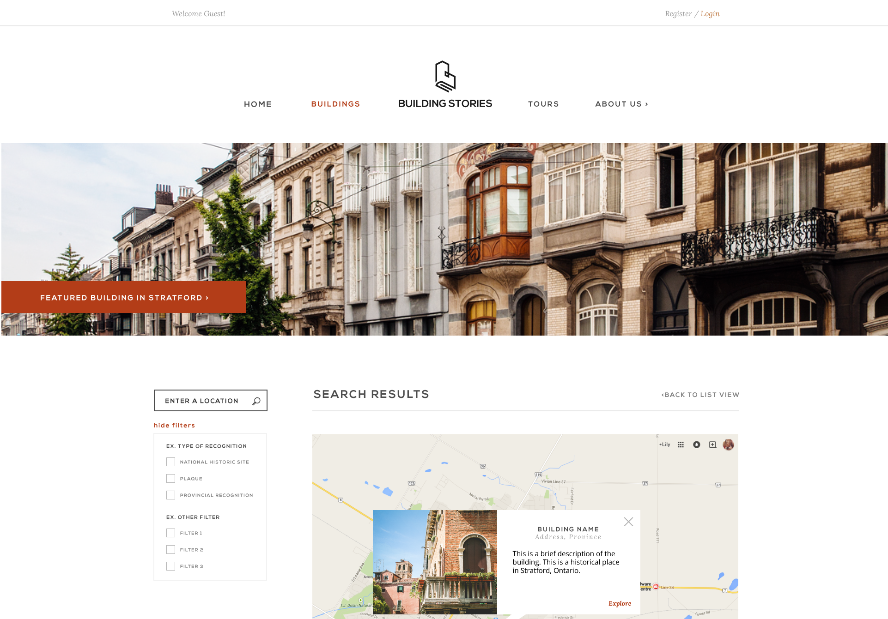

Old Interface - Problem Identification
Why don't users want to sign up and interact with the web platform?
To have the right solution we need to target the right problem, and to do that we dedicated the first 3 weeks to user testing and stakeholder interviews. Below are screenshots of the old website design. We watched users struggle through the highly complex navigation structure, surf through a sea of mixed content, and hunt for missing buttons (affordances) such as "Search" and "Go." We then asked our client (HRC) how they wanted users to interact with the website and what obstacles they faced.
Ideation
This was the exciting part. Once we've summarized the most pressing usability issues, I worked together with Ruby Cheung (Information Architect) and Mary Quilao (UX Designer) to create a new website structure that eliminates these painpoints and allows for seamless interaction. We researched similar user-generated content platforms to find common elements, and regrouped content for better organization.
A New Look
Building Stories needed a new branding scheme - something that is more modern, memorable, and representative of what the platform offers. I took on the role of designing the new logo as well as carefully selecting a new color palette and type faces. The new logo embodies the image of both a building and a book, while the color palette reflects the earthy tones of building materials.
All designs and mockups were created on Adobe Illustrator.
Open Sans
ABCDEFGHIJKLMNOPQRSTUVWXYZ
abcdefghijklmnopqrstuvwxyz
0123456789
Lora Italic
ABCDEFGHIJKLMNOPQRSTUVWXYZ
abcdefghijklmnopqrstuvwxyz
0123456789
Nexa Bold
ABCDEFGHIJKLMNOPQRSTUVWXYZ
abcdefghijklmnopqrstuvwxyz
0123456789

